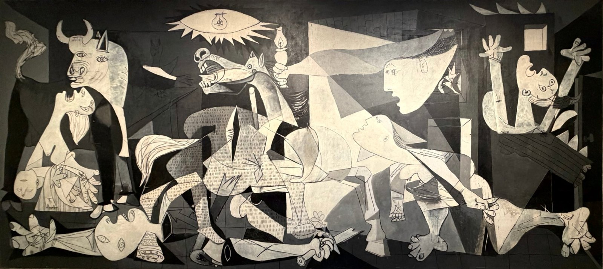

Santos Rivera-Cardona
CV
Research
Teaching
Flag Database
Contact
Contact

Pablo Picasso,
Guernica
, 1937. Museo Nacional Centro de Arte Reina Sofía, Madrid. Photograph by Santos Rivera-Cardona.
Email
santos.rivera@rutgers.edu
Bluesky
@santoscardonapr.bsky.social
Mailing Address
Santos Rivera-Cardona
Department of Political Science
Rutgers University
89 George Street
New Brunswick, NJ 08901